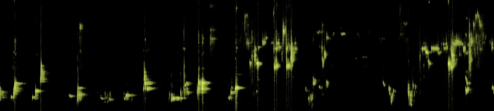

Doze espécies da Mata Atlântica traduzidas em som com IA generativa. Em cada peça o animal fica em primeiro plano e a mata é o lugar de onde ele é ouvido.
Ao lado de cada peça estão os takes aprovados e os descartados, com o motivo de cada descarte.
Criatividade Computacional, CIn/UFPE. Alex Lacava, Guilherme Rigaud, Lucas Melo, João Ohashi, Levi Serrano e Josias Netto.

As setas trocam de espécie; Espaço toca e pausa.Deslize para trocar de espécie.